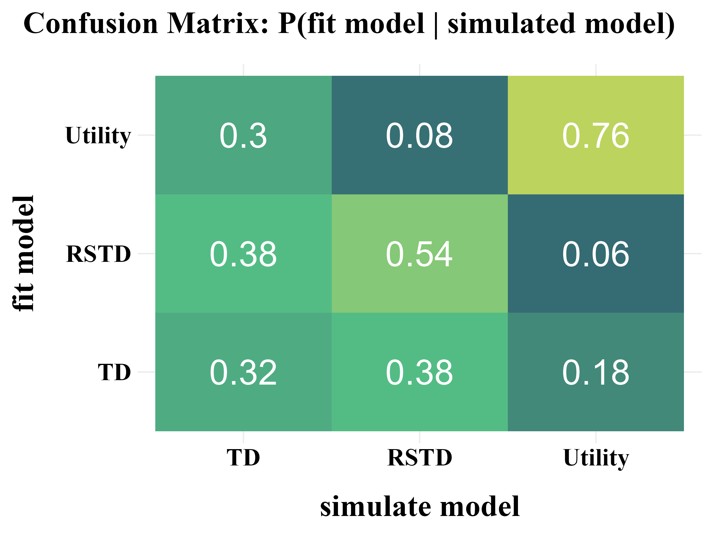

In tasks with small, finite state sets (e.g. TAFC tasks in psychology), all states, actions, and their corresponding rewards could be recorded in tables.
- Sutton & Barto (2018)
call this kind of scenario as the tabular case and the
corresponding methods as tabular methods.
- The development and usage workflow of this R package adheres to the
four stages (ten rules) recommended by Wilson &
Collins (2019).
- The three basic models built into this R package
are referenced from Niv et al. (2012).
- The example data used in this R package is an open data from Mason et. al. (2024)


Reference
Sutton, R. S., & Barto, A. G. (2018). Reinforcement Learning: An Introduction (2nd ed). MIT press.
Wilson, R. C., & Collins, A. G. (2019). Ten simple rules for the computational modeling of behavioral data. Elife, 8, e49547. https://doi.org/10.7554/eLife.49547
Niv, Y., Edlund, J. A., Dayan, P., & O’Doherty, J. P. (2012). Neural prediction errors reveal a risk-sensitive reinforcement-learning process in the human brain. Journal of Neuroscience, 32(2), 551-562. https://doi.org/10.1523/JNEUROSCI.5498-10.2012
Mason, A., Ludvig, E. A., Spetch, M. L., & Madan, C. R. (2024). Rare and extreme outcomes in risky choice. Psychonomic Bulletin & Review, 31(3), 1301-1308. https://doi.org/10.3758/s13423-023-02415-x
1. Run Model
Create a function with ONLY ONE argument,
params
Model <- function(params){
res <- binaryRL::run_m(
data = data,
id = id,
n_trials = n_trials,
n_params = n_params,
priors = priors,
mode = mode,
policy = policy,
# ╔═══════════════════════════════════╗ #
# ║ You only need to modify this part ║ #
name = "Your Model Name",
# ║ -------- free parameters -------- ║ #
# value function
eta = c(params[1], params[2]),
gamma = c(params[3], params[4]),
# exploration–exploitation trade-off
initial_value = NA_real_,
threshold = 1,
epsilon = c(params[5]),
lambda = c(params[6]),
# upper-confidence-bound
pi = c(params[7]),
# soft-max
tau = c(params[8]),
lapse = 0.02,
# extra parameters
alpha = c(param[...], param[...]),
beta = c(param[...], param[...]),
# ║ -------- core functions --------- ║ #
util_func = your_util_func,
rate_func = your_rate_func,
expl_func = your_expl_func,
bias_func = your_bias_func,
prob_func = your_prob_func,
loss_func = your_loss_func,
# ║ --------- column names ---------- ║ #
sub = "Subject",
time_line = c("Block", "Trial"),
L_choice = "L_choice",
R_choice = "R_choice",
L_reward = "L_reward",
R_reward = "R_reward",
sub_choose = "Sub_Choose",
var1 = "extra_Var1",
var2 = "extra_Var2"
# ║ You only need to modify this part ║ #
# ╚═══════════════════════════════════╝ #
)
assign(x = "binaryRL.res", value = res, envir = binaryRL.env)
loss <- switch(EXPR = estimate, "MLE" = -res$ll, "MAP" = -res$lpo)
switch(EXPR = mode, "fit" = loss, "simulate" = res, "replay" = res)
}Custom Functions
The default function is applicable to three basic models (TD, RSTD, Utility).
- You can also customize all the five core functions to build your own
RL model. Here is an example of how to build a RL model based on Prospect
theory through customizing
util_func.
Utility Function (γ)
print(binaryRL::func_gamma)
func_gamma <- function(
# variables before decision-making
i, L_freq, R_freq, L_pick, R_pick, L_value, R_value,
# variables after decision-making
value, utility, reward, occurrence,
# parameters
gamma,
# extra variables
var1, var2,
# extra parameters
alpha, beta
){
# Stevens's Power Law
if (length(gamma) == 1) {
gamma <- gamma
utility <- sign(reward) * (abs(reward) ^ gamma)
}
# error
else {
utility <- "ERROR"
}
return(list(gamma, utility))
}Learning Rate (η)
func_eta <- function (
# variables before decision-making
i, L_freq, R_freq, L_pick, R_pick, L_value, R_value,
# variables after decision-making
value, utility, reward, occurrence,
# parameters
eta,
# extra variables
var1, var2,
# extra parameters
alpha, beta
){
# TD
if (length(eta) == 1) {
eta <- as.numeric(eta)
}
# RSTD
else if (length(eta) == 2 & utility < value) {
eta <- eta[1]
}
else if (length(eta) == 2 & utility >= value) {
eta <- eta[2]
}
# error
else {
eta <- "ERROR"
}
return(eta)
}Epsilon Related (ε)
print(binaryRL::func_epsilon)
func_epsilon <- function(
# variables before decision-making
i, L_freq, R_freq, L_pick, R_pick, L_value, R_value,
# parameters
threshold, epsilon, lambda,
# extra variables
var1, var2,
# extra parameters
alpha, beta
){
# epsilon-first
if (i <= threshold) {
try <- 1
} else if (i > threshold & is.na(epsilon) & is.na(lambda)) {
try <- 0
# epsilon-greedy
} else if (i > threshold & !(is.na(epsilon)) & is.na(lambda)){
try <- sample(
c(1, 0),
prob = c(epsilon, 1 - epsilon),
size = 1
)
# epsilon-decreasing
} else if (i > threshold & is.na(epsilon) & !(is.na(lambda))) {
try <- sample(
c(1, 0),
prob = c(
1 / (1 + lambda * i),
lambda * i / (1 + lambda * i)
),
size = 1
)
}
# error
else {
try <- "ERROR"
}
return(try)
}Upper-Confidence-Bound (π)
func_pi <- function(
# variables before decision-making
i, L_freq, R_freq, L_pick, R_pick, L_value, R_value,
# adjusting Left option value or Right option value
LR,
# parameters
pi,
# extra variables
var1, var2,
# extra parameters
alpha, beta
){
# at least 1
if (is.na(x = pi)) {
if (L_pick == 0 & R_pick == 0) {
bias <- 0
}
else if (LR == "L" & L_pick == 0 & R_pick > 0) {
bias <- 1e+4
}
else if (LR == "R" & R_pick == 0 & L_pick > 0) {
bias <- 1e+4
}
else {
bias <- 0
}
}
# bias value
else if (!(is.na(x = pi)) & LR == "L") {
bias <- pi * sqrt(log(L_pick + exp(1)) / (L_pick + 1e-10))
}
else if (!(is.na(x = pi)) & LR == "R") {
bias <- pi * sqrt(log(R_pick + exp(1)) / (R_pick + 1e-10))
}
# error
else {
bias <- "ERROR"
}
return(bias)
}Soft-Max (τ)
func_tau <- function (
# variables before decision-making
i, L_freq, R_freq, L_pick, R_pick, L_value, R_value,
# Exploration–Exploitation Trade-off
try,
# calculating Left option or Right option probability
LR,
# parameters
lapse,
tau,
# extra variables
var1, var2,
# extra parameters
alpha, beta
){
# random
if (try == 1) {
prob <- 0.5
}
# greedy-max
else if (try == 0 & LR == "L" & is.na(tau)) {
if (L_value == R_value) {
prob <- 0.5
}
else if (L_value > R_value) {
prob <- 1
}
else if (L_value < R_value) {
prob <- 0
}
}
else if (try == 0 & LR == "R" & is.na(tau)) {
if (L_value == R_value) {
prob <- 0.5
}
else if (R_value > L_value) {
prob <- 1
}
else if (R_value < L_value) {
prob <- 0
}
}
# soft-max
else if (try == 0 & LR == "L" & !(is.na(tau))) {
prob <- 1 / (1 + exp(-(L_value - R_value) * tau))
}
else if (try == 0 & LR == "R" & !(is.na(tau))) {
prob <- 1 / (1 + exp(-(R_value - L_value) * tau))
}
# error
else {
prob <- "ERROR"
}
prob <- (1 - lapse) * prob + (lapse / 2)
return(prob)
}Loss Function (LL)
func_logl <- function(
# variables before decision-making
i, L_freq, R_freq, L_pick, R_pick, L_value, R_value,
# variables after decision-making
value, utility, reward, occurrence,
# Whether the participant chose the left or right option.
L_dir, R_dir,
# The probability that the model assigns to choosing the left or right option
L_prob, R_prob,
# Exploration–Exploitation Trade-off
try,
# calculating Left option logl or Right option logl
LR,
# extra variables
var1, var2,
# extra parameters
alpha, beta
){
logl <- switch(
EXPR = LR,
"L" = L_dir * log(L_prob),
"R" = R_dir * log(R_prob)
)
return(logl)
}Three Classic RL Models
These basic models are built into the package. You can use them using
TD(), RSTD(), Utility().
1. TD Model (\(\eta\))
“The TD model is a standard temporal difference learning model (Barto, 1995; Sutton, 1988; Sutton and Barto, 1998).”
if only ONE \(\eta\) is set as a free paramters, it represents the TD model.
2. Risk-Sensitive TD Model (\(\eta_{-}\), \(\eta_{+}\))
“In the risk-sensitive TD (RSTD) model, positive and negative prediction errors have asymmetric effects on learning (Mihatsch and Neuneier, 2002).”
If TWO \(\eta\) are set as free parameters, it represents the RSTD model.
3. Utility Model (\(\eta\), \(\gamma\))
“The utility model is a TD learning model that incorporates nonlinear subjective utilities (Bernoulli, 1954)”
If ONE \(\eta\) and ONE \(\gamma\) are set as free parameters, it represents the utility model.
2. Recovery
Here, using the publicly available data from Mason et al. (2024), we demonstrate how to perform parameter recovery and model recovery following the method suggested by Wilson & Collins (2019).
- Notably, Wilson & Collins (2019) recommend
increasing the softmax parameter \(\tau\) by 1 during model recovery, as this
can help reduce the amount of noise in behavior.
- Additionally, different algorithms and varying number of iterations can also influence the results of both parameter recovery and model recovery. You should adjust these settings based on your specific needs and circumstances.
recovery <- binaryRL::rcv_d(
data = binaryRL::Mason_2024_G2,
# ╔═══════════════════════════════════════════════════════════════════════════╗ #
# ║ --------------------------- black-box function -------------------------- ║ #
#funcs = c("your_funcs"),
model_names = c("TD", "RSTD", "Utility"),
simulate_models = list(binaryRL::TD, binaryRL::RSTD, binaryRL::Utility),
simulate_lower = list(c(0, 0), c(0, 0, 0), c(0, 0, 0)),
simulate_upper = list(c(1, 1), c(1, 1, 1), c(1, 1, 1)),
fit_models = list(binaryRL::TD, binaryRL::RSTD, binaryRL::Utility),
fit_lower = list(c(0, 0), c(0, 0, 0), c(0, 0, 0)),
fit_upper = list(c(1, 5), c(1, 1, 5), c(1, 1, 5)),
# ║ --------------------------- interation number --------------------------- ║ #
iteration_s = 100,
iteration_f = 100,
# ║ ------------------------------- algorithms ------------------------------ ║ #
nc = 1, # <nc > 1>: parallel computation across subjects
# Base R Optimization
algorithm = "L-BFGS-B" # Gradient-Based (stats)
# ║ ------------------------------------------------------------------------- ║ #
# Specialized External Optimization
#algorithm = "GenSA" # Simulated Annealing (GenSA)
#algorithm = "GA" # Genetic Algorithm (GA)
#algorithm = "DEoptim" # Differential Evolution (DEoptim)
#algorithm = "PSO" # Particle Swarm Optimization (pso)
#algorithm = "Bayesian" # Bayesian Optimization (mlrMBO)
#algorithm = "CMA-ES" # Covariance Matrix Adapting (cmaes)
# ║ ------------------------------------------------------------------------- ║ #
# Optimization Library (nloptr)
#algorithm = c("NLOPT_GN_MLSL", "NLOPT_LN_BOBYQA")
# ║ ------------------------------- algorithms ------------------------------ ║ #
# ╚═══════════════════════════════════════════════════════════════════════════╝ #
)
result <- dplyr::bind_rows(recovery) %>%
dplyr::select(simulate_model, fit_model, iteration, everything())
write.csv(result, file = "../OUTPUT/result_recovery.csv", row.names = FALSE)Simulating Model: TD | Fitting Model: TD |==== | 10%
Check the Example Result: result_recovery.csv
Parameter Recovery
“Before reading too much into the best-fitting parameter values, \(\theta_{m}^{MLE}\), it is important to check whether the fitting procedure gives meaningful parameter values in the best case scenario, -that is, when fitting fake data where the ‘true’ parameter values are known (Nilsson et al., 2011). Such a procedure is known as ‘Parameter Recovery’, and is a crucial part of any model-based analysis.”


The value of the softmax parameter \(\tau\) affects the recovery of other parameters in the model. Under the assumption that \(\tau \sim \text{Exp}(1)\), adding 1 to all \(\tau\) values improves the recovery of the learning rate \(\eta\), but decreases the recovery accuracy of \(\tau\) itself.


Model Recovery
“More specifically, model recovery involves simulating data from all models (with a range of parameter values carefully selected as in the case of parameter recovery) and then fitting that data with all models to determine the extent to which fake data generated from model A is best fit by model A as opposed to model B. This process can be summarized in a confusion matrix that quantifies the probability that each model is the best fit to data generated from the other models, that is, p(fit model = B | simulated model = A).”


“In panel B, all of the softmax parameters \(b\) and \(b_{c}\) were increased by 1. This has the effect of reducing the amount of noise in the behavior, which makes the models more easily identifiable and the corresponding confusion matrix more diagonal.”


3. Fit Real Data
Following the recommendations of Wilson & Collins (2019), a model is only worth fitting to real data if it demonstrates good performance in the parameter recovery and model recovery.
Once all the previous steps have been completed, you can finally move on to modeling your empirical data.
If the model-independent analyses do not show evidence of the expected results, there is almost no point in fitting the model. Instead, you should go back to the beginning, either re-thinking the computational models if the analyses show interesting patterns of behavior, or re-thinking the experimental design or even the scientific question you are trying to answer.
comparison <- binaryRL::fit_p(
data = binaryRL::Mason_2024_G2,
id = unique(binaryRL::Mason_2024_G2$Subject),
# ╔═══════════════════════════════════════════════════════════════════════════╗ #
# ║ --------------------------- black-box function -------------------------- ║ #
#funcs = c("your_funcs"),
policy = c("off", "on"),
model_name = c("TD", "RSTD", "Utility"),
fit_model = list(binaryRL::TD, binaryRL::RSTD, binaryRL::Utility),
# ║ ------------------------------- estimate -------------------------------- ║ #
estimate = c("MLE", "MAP"),
# ║ ---------------------------------- MLE ---------------------------------- ║ #
lower = list(c(0, 0), c(0, 0, 0), c(0, 0, 0)),
upper = list(c(1, 10), c(1, 1, 10), c(1, 1, 10)),
# ║ ---------------------------------- MAP ---------------------------------- ║ #
priors = list(
list(
eta = function(x) { stats::dunif(x, min = 0, max = 1, log = TRUE) },
tau = function(x) { stats::dexp(x, rate = 1, log = TRUE) }
),
list(
eta = function(x) { stats::dunif(x, min = 0, max = 1, log = TRUE) },
eta = function(x) { stats::dunif(x, min = 0, max = 1, log = TRUE) },
tau = function(x) { stats::dexp(x, rate = 1, log = TRUE) }
),
list(
eta = function(x) { stats::dunif(x, min = 0, max = 1, log = TRUE) },
gamma = function(x) { stats::dunif(x, min = 0, max = 1, log = TRUE) },
tau = function(x) { stats::dexp(x, rate = 1, log = TRUE) }
)
),
# ║ ---------------------------- iteration number --------------------------- ║ #
iteration_i = 100,
iteration_g = 100,
# ║ ------------------------------- algorithms ------------------------------ ║ #
nc = 1, # <nc > 1>: parallel computation across subjects
# Base R Optimization
algorithm = "L-BFGS-B" # Gradient-Based (stats)
# ║ ------------------------------------------------------------------------- ║ #
# Specialized External Optimization
#algorithm = "GenSA" # Simulated Annealing (GenSA)
#algorithm = "GA" # Genetic Algorithm (GA)
#algorithm = "DEoptim" # Differential Evolution (DEoptim)
#algorithm = "PSO" # Particle Swarm Optimization (pso)
#algorithm = "Bayesian" # Bayesian Optimization (mlrMBO)
#algorithm = "CMA-ES" # Covariance Matrix Adapting (cmaes)
# ║ ------------------------------------------------------------------------- ║ #
# Optimization Library (nloptr)
#algorithm = c("NLOPT_GN_MLSL", "NLOPT_LN_BOBYQA")
# ║ ------------------------------- algorithms ------------------------------ ║ #
# ╚═══════════════════════════════════════════════════════════════════════════╝ #
)
result <- dplyr::bind_rows(comparison)
write.csv(result, "../OUTPUT/result_comparison.csv", row.names = FALSE)Fitting Model: TD |================ | 25%
Check the Example Result: result_comparison.csv
Model Comparison
Using the result file generated by binaryRL::fit_p, you
can compare models and select the best one.
.png)
4. Replay the Experiment
Users can use the simple code snippet below to load the model fitting results, retrieve the best-fitting parameters, and feed them back into the model to reproduce the behavioral data generated by each reinforcement learning model.
list <- list()
list[[1]] <- dplyr::bind_rows(
binaryRL::rpl_e(
data = binaryRL::Mason_2024_G2,
result = read.csv("../OUTPUT/result_comparison.csv"),
model = binaryRL::TD,
model_name = "TD",
param_prefix = "param_",
)
)
list[[2]] <- dplyr::bind_rows(
binaryRL::rpl_e(
data = binaryRL::Mason_2024_G2,
result = read.csv("../OUTPUT/result_comparison.csv"),
model = binaryRL::RSTD,
model_name = "RSTD",
param_prefix = "param_",
)
)
list[[3]] <- dplyr::bind_rows(
binaryRL::rpl_e(
data = binaryRL::Mason_2024_G2,
result = read.csv("../OUTPUT/result_comparison.csv"),
model = binaryRL::Utility,
param_prefix = "param_",
model_name = "Utility",
)
)